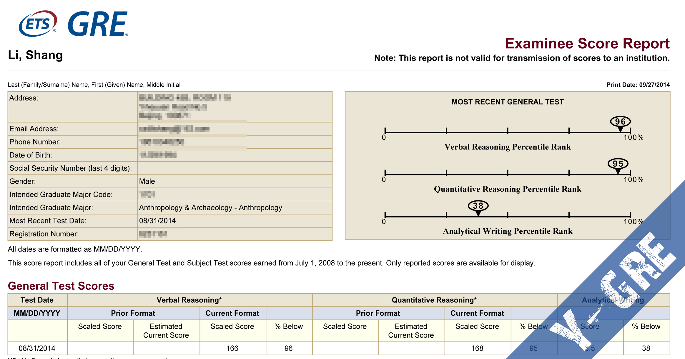
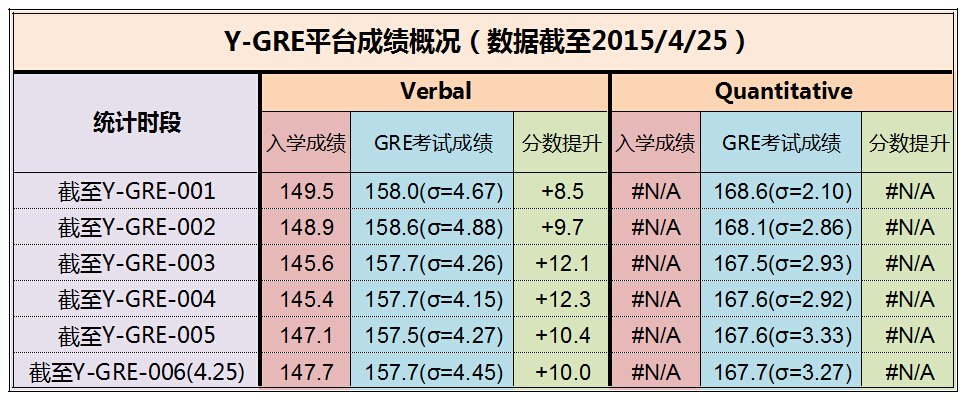
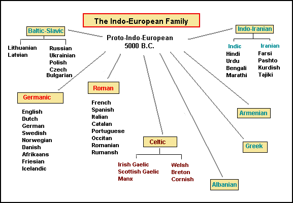
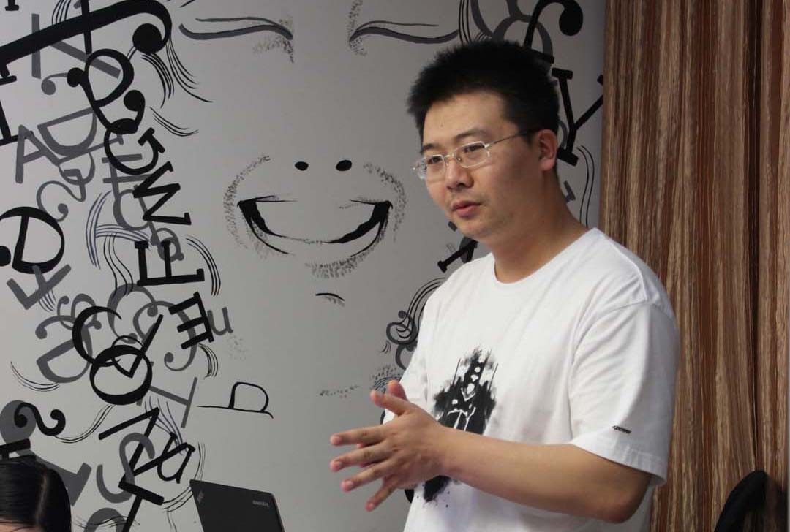
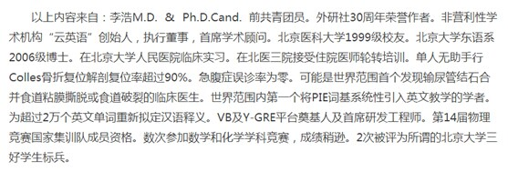
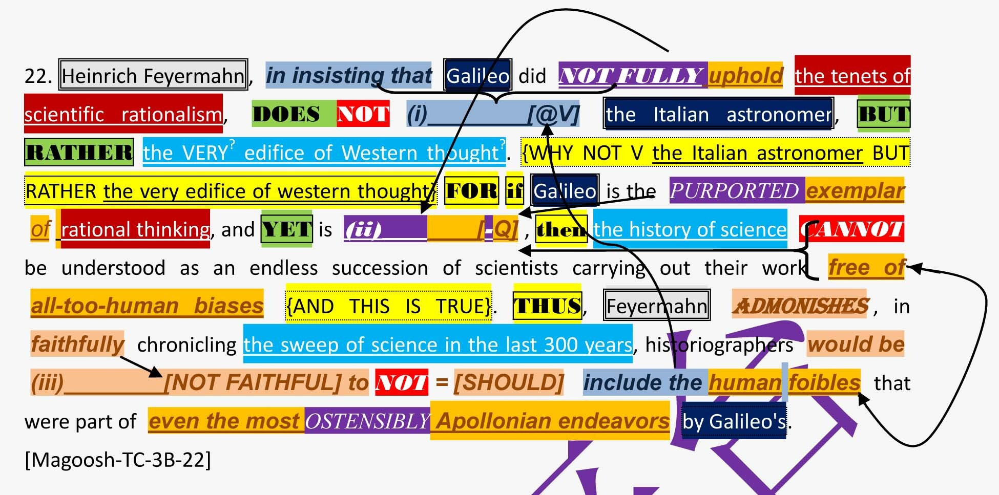
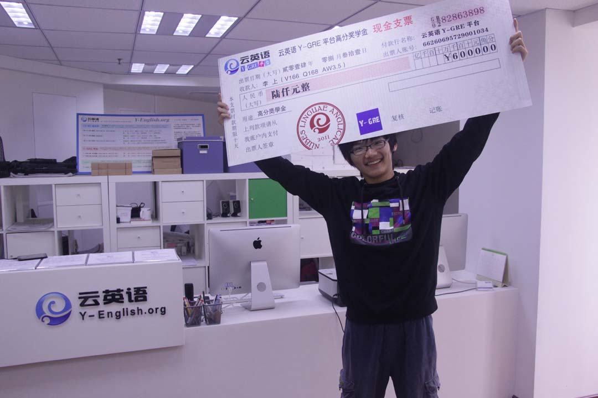
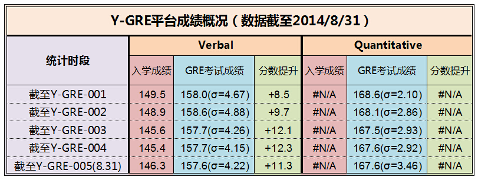

云英语
云英语：因学术而改变

考试时间：2014.08.31（交大考场）
考试分数：VB166 Q168 AW3.5
备考时间：180h
题记：本来这个标题想直接缩成G V 166的，但是觉得看起来好像不太好，万一有人求种子可就不好办了。所以还是写长一点，妈妈说标题要长。好了好了，我知道题记不是这么写的，看正文吧。
我其实是一个挺没谱的人的，你看我Q的成绩就应该能知道。之前，总想着要出国，又觉得鸡阿姨（GRE）好难烤看起来好可怕的样子。现在呢，总算是G考了高分，又觉得自己应该换专业，可是没有相关研究经验不好申奖，于是我暂时决定不出去了——所以这个经验贴的思维可能也会比较飘逸。
我特别讨厌背单词，我不认为这是学习。大二大三的时候我觉得，为了学好英语，我应该像美国人英国人那样学英语，应该是浸润在生活中的。所以我就先后去搞了两本英文书看，一本《菊与刀》（校图里的竟然还是燕京大学留下来的），一本The Last Days of Old Beijing，都是我对内容特别感兴趣的。一开始也是一页查几十个词啃得很慢（查汉译这个行为本质上和背单词没什么区别，是比较恶劣的习惯），一个学期没看几章；而且当时破手机的词典只有纯汉译，生搬硬套各种对不上语境。后来慢慢地查词强迫症就减弱了，开始能够以接近读中文的态度来读英文书，关注想表达的东西而不是这个词尼玛我怎么不认识啊好不爽啊。这个阅读感觉事实上证明是我后来备考GRE的先天条件里最重要的财富。
从这里开始说云英语的部分，先说词汇（也就是VB）。
云英语（Y-English.org）最开始吸引我纯粹是因为它通过讲词源来学单词。云英语的VB到底是个什么东东，感兴趣的同学可以去看经院12级一个学弟（V165 Q170）写的心得https://legacy.y-english.org/feedback/posts/013.html。云英语的GRE备考方案包括VB词汇建造师（Vocabulary Builder）和Y-GRE两个部分。当时我曾经怕时间不够，考虑过不修VB的部分，直接上Y-GRE平台的备考课程；但最终经验证明，VB的精髓不仅仅在于通过词源梳理词汇（我以前也以为不过是类似词根系统之类的东西），而且背后是有若干很重要的方法论在支持这个体系。虽然我在本科期间选修过很多稀奇古怪的语言（日、俄、西、葡、意、满、蒙、阿姆哈拉語），不能说对外语学习是完全没感觉的，但最后发现我确实在开始低估了VB的价值。
我觉得VB最精髓的（虽然不是最独一无二的）观点，就是李浩老师说的，"非术语的单词一定要在语境中理解"。背后的大思想是，每个词由它的词源演变过来；这个词源是有一个意象的，是可以"表演"出来的；历史上因为"拓展表达手段的需要"，一个词或它的衍生词不断被放进新的语境，而原来的词源意象则根据不同语境进行adaptation，这些不同语境中相应的adaptations在语言中固化下来，就是这个词所谓的"各个义项"。
比如issue来源是ex (out) + ire (go)，这个词源上的基本意象就是"走出来"，现代英语issue所有含义都是由此生成：较直接的有"流出来的东西（如血，脓）"，"发行的刊物"，"生出的后代"；抽象一点的比如"最终结果"（即outcome，组成部分正好跟out+go一一对应）和"最终决议"。至于我们最熟悉的含义"有争议的问题"，其实是由"决议"引申而来。如果你不知道"走出来"的这个意象，只知道issue是"问题"，那你是无论如何也读不懂hope that his enterprise would have a prosperous issue其实是说"希望他的事业能有一个好结果"；反而会怪罪某些考试是God Read English。
所以"背汉译"其实是一件非常脑残的事情（我没有否认汉译在帮助建立这个词的形象时的作用；李老师也说过，你要是只看英义来理解词，看久了就会发现行不通，你需要母语的帮助）。因为我平时写随笔也会喜欢通过挑选组合一个词里头每个字的意思来构建它新的词义，这其实就是语言演变过程中词语不断获得新释义的过程。只是我的文章不会流行开，让我造的这个释义进入词典而已。
反过来讲，如果一个歪果仁（外国人），比如他母语是英语，他只背了某个汉语词对应的英文单词，他肯定会在很多汉语语境中茫然不知所措。举个栗子（例子）：比如这个歪果仁学习"问题"这个汉语词，他通过词汇书或字典知道"问题"就是question，也即所谓有疑问时提的"问题"。但是这并不是"问题"在汉语中的全部意思：因为"问题"会让你疑惑，所以它难搞，是一个眼中钉一样的障碍，于是就又有了problem的意思。（顺便说一句，英文单词problem本身拆解开是pro [forward] + ballein [throw]，即"扔到你面前的一个障碍"。它本来也只是question的那种"被提出来的问题"的意思，即a thing put forward，后来也是词义引申才有了difficulty的含义。）如果这个死背释义的歪果仁不了解这种追随语境的词义变化，他就会觉得"问题少年"是一个question teenager，是一个"爱问问题的少年"。或者我说"这个人有严重的问题"，他可能就会觉得是这个人提出了一个serious question。这样他来考中文的GRE，他可能也会觉得这是God Read Chinese。
而且，更进一步，"背词根"也是很无厘头的。我有个室友在上北大一门课，叫《实用英语词源学》。有一天他就问我apt-这个词根怎么背。我首先觉得很惊奇，apt-为什么会是一个词根呢？它不是一个词吗？然后我明白了它是"词根"是因为它可以通过+ itude变成aptitude，通过ad + apt变成adapt，之类的。那这样还是等于背汉译，apt-不是一个词根，不是用来背汉译的。他和他的老师可能都不知道，apt最根本的来源是原始印欧语词基*ap-，"to grasp, take, reach"，到拉丁语里变成一个动词是apere，"to attach, join, tie to"（ere是动词不定式词尾，相当于英文to do的to），变成过去分词就是apt-（-t-是动词变位词尾，无实在含义）。所以这个词的核心就是ap，就像把插头往插座里一拍的那个动作，你这么一ap，就把这个东西变成了那个整体的一部分，它就被ap了，就apt了。那它既然成为了一部分，就和另外那部分是相适配的，所以apt就有了fitted，suited的意思。这个才叫做"学词根"。理论上说，你可以完全不认识它的原始印欧语啊拉丁希腊这些祖宗爷爷什么的；只要知道最核心的意象（就是那个把一坨ap到另一坨上的动作），再结合语境抓住含义的整个演进路线就足够了。光背个apt是个词根，意思是"适合"什么的，那还是在死背词根释义，不是在学单词。其实，最好的考验方式就是你能不能表演出来这个词的形象，而不是只说几个义项出来。
当然，到了写作的层次，就需要熟悉每个动词能在什么语境用了。尤其不能把一个词的词源意象放到它不应用的语境里去（这是一个历史路径选择的问题，而不是合理性即可justify其存在的问题），然后自己解释出一个所谓意思。明白哪些语境适用虽然离不开经验积累的过程，但还是要结合理解，不是纯靠背的。
这里，还想跟其他学VB的同学说两句。我觉得大家实在是被"背"字毒害惯了，我上的时候碰到好多同学VB都学完了还在说"背单词"。如果根本思维没有改变过来，那李老师靠他的天才策划表演的那一个个词根形象基本都白费了；如果还是在背词根背释义，那时间一长就又记不住了。思维一定要改，一定要改，一定要改。
然后是第二部分，说说云英语Y-GRE平台到底是怎么提高成绩。
大家都知道大陆第一个新GRE满分不是出在XDF，而是出在云英语。（感兴趣的同学可以看黄笛前辈当年看似无字书的经验贴http://wenku.baidu.com/link?url=kVChKcAZAlzgXydvG866fqgD7SnlOfptGToK8vwS0d7pNKXqaEB5MOTWh7RGRL2vuniO6PWk
IPQ0u58QbiUnlt4gB093WEr7mP3KZzxQWMW）在GRE备考方面，云英语有很好的天才人力资源和问题解决办法。比如他们的工厂化模块化运作，缺陷分析和成绩预测系统，备考框架设计和建议，针对性的人工干预，V-Builder-170词汇拓展，学科背景预处理，预测式图景阅读，还有完善的测验反馈机制等等——我有好多其实没用到也没有搞明白。Y-GRE有10个模块，我只学完第4个！印象最深的就是用来拆解鸡阿姨的装逼文本，以及平时各种绕来绕去难读得要死的中英文本。虽然我还没完全学会这一套东西就去考了，但是至少我知道我原来的解决方法是有缺陷的，而这个缺陷是可以靠他们传递的一整套方法论和相应的练习和干预来弥补的。我觉得这确实不是一般培训机构有能力干成的事。
关于其创始人，据说是当年类似于韦神一样的存在（曹子聪语）。横跨数理化三科竞赛国一，拒绝参加世界赛，高考读了医科，仍旧GPA无人能敌啊啊啊。我在网上找到下面这个东西供小伙伴们一览。
 书归正传，我来重点说一说预测式图景阅读中的"图景"。"图景"这个概念，大致就是指一段话的一个整体形象。在典型的学术文章里，可以把一段话中关键性的成分划分为不同的意群组，每个意群组中同一个意思会在前后文换用不同的表达方式，也就是paraphrase（比如下面这道3空题前文说到伽利略，后文提他时换了个说法叫the Italian astronomer）。不只是用不同的颜色和符号来标记不同意群下的词，那些指示句义和逻辑发展/转折的信号词（otherwise，nonetheless，etc.）和暗示行文态度基调的undertone词等等……也用各自的颜色和符号来做标记。标记完之后这段话的骨架脉络就清晰了。信号词相当于关节，来把作为骨骼肌肉的意群串联成一个整体，从而在你脑子里建立这整个形象。画标记是前期的基础训练，熟练之后就要达到能在脑子里生成图景的水平了。当然，再次声明，我以上的描述很不严谨。而且为了描述方便，完全忽略了"预测"的成分。不妨上个图：
这是一个经典Magoosh三空题的注释讲解版，画得五彩斑斓是因为它的确比较绕，需要比较复杂的标记体系，大致是一种颜色画一组意群，然后有各种并行和对立的逻辑联系。
显然可见，这个是一门很难的功夫。（我还没有讲"预测"呢，那不知道又要高到那里去了！）虽然上手困难，但结果受益终生。我最开始就是逞能，一些简单题不说，阅读也不做纸上画标记的基础训练，刷题刷得巨快，纯靠我之前高于常人的基础阅读能力。但是它妹有用啊！虽然我对得多，但是后来发现该错的还是错，没有提高。然后我就投降了，开始老老实实地从靠纸上标记来建立语义图景开始做。
虽然画标记刚开始练习时感觉麻烦，对简单题可能觉得多此一举，对复杂的题可能又画不明白。但这是一个训练的过程，不训练GRE成绩是不可能提升的，你背再多单词也只能考出原有的成绩！我经常犯的一个错误就是第一眼排掉了正确选项（ETS的误导性就在于，乍看之下，总是觉得那个正确选项是不对的），然后觉得其他的也都没有完全符合的，就放松了匹配图景的标准，然后就被误导了，就把错的脑补成对的了。关于脑补一失足成千古恨的经验教训请参照数院大牛王晓玮的经验贴（https://legacy.y-english.org/feedback/posts/011.html）所以如果第一眼觉得没一个对的，千万不要脑补！！！这个时候应该快速归零一下心态，按照标准流程重新解析题干。千万不能从把正确答案排掉的那一步接着往下做，要重新来，回到那一步之前。如果我说得比较抽象，那你只能在实践中建立这个认识了……
云英语的一个经典教诲就是"GRE不是一个英语考试，它是智力考试"。也就是说，如果把考题按某种假设存在的"完全准确"的方式翻译成中文，给你来做，你也不一定能做对多少！你想想美国大学生平均分也才15几呢。所以，要养成预测式图景阅读的习惯，而不是给有缺陷的学习方法框架添砖加瓦，辛辛苦苦做无用功。我们得在矫正行为方式的高度上去修缮原先的认知框架。我的忠告是："一定要听子聪老师的话，照他说的去做。"
最后，是我实际考试的结果和另外一些碎碎念。
如果按每天10小时计算，我总计备考的有效时间也就是18天。最后实考的时候第一个Verbal Section错了一道题。那是道论述结构题，考察一个段落在全文中的作用。这个错的原因就属于图景形成得比较模糊，全文论述的形象感没有建立。考完了再玩味这道题的时候，我就改用了读中文的读法去思考那篇文章，然后就发现那个题选错了。也就是说，截止到考试的时候，我的图景阅读能力也就建立到这一步了，还不能在有时限压力的考场上对每道题目都形成完整透彻的认知。正因为凭模糊语感来猜测的成分还是有一些，所以第二个特别鬼畜的Verbal就又错了几道。这样最后的结果就只考了166。
考G之后，我最近又读了一些人类学专著的简述，就感觉到即使是中文，在论述结构复杂的时候（整本书浓缩成几页），我也确实不能很好地建立图景。就更加感觉到Y-GRE训练的这个方面，不论在中文还是英文的学术阅读，都是非常必要的！要培养这个技能并不断巩固强化，当然首先是要听老师的话，要去培养，要踏踏实实付诸行动。不要像我最开始一样，试了一下觉得麻烦或者不好弄，就不弄了，这样子自己搞最后结果是不会好的……要听话。
关于写作我就没做够准备，时间太仓促了。我属于那种不会打辩论的。那种只要求逻辑框架成立的、不管是否实际上论证是否成立的、只要貌似正确就可以的论述我是完全不会组织——至少半个钟头写不出来（这里我明显指的是GRE分析性写作中的Issue部分）。和别人争论一个事我经常三天以后想起来，"哦！他的那个论点应该那么回应！"。而且写作属于需要长期磨练的东西，想要一下子改变自己能说出来的话的档次，基本是不可能的。
但还是写一个我的心得，这个同时也适用于做题。就是ETS选的题，或者不管哪个写东西写得比你好的人，是有他的一套语言风格和味道的。你要不断地试着去"说出"它的文字，当做是自己的话一样，慢慢地把它的语言内化，这样你才能写出这样的文字。
应用到做题上，很多人都是按照自己的说话习惯构想了答案，然后去找相近的。所以大家选错的，实际上都是因为在选"自己想选的那个"，而不是"出题人想让你选的那个"。最开始，在一些比较难的题目上出错，就是因为不能习惯"这个地方怎么会想到用这个词呢？"。我的办法是，不管是语言风格不习惯，还是语境不熟悉，我统统把它抄一遍，然后去咂吧那个话的味道。等到你的思维习惯和出题人一致了，你就能自己说出正确答案了。这个时候"自己想选的"和"出题人想让你选的"就一体化了，就做对了。
大概就想到这么多，总之云英语是个好机构，教大家的人是很厉害的人，不要自己胡来，这是坠吼的。
版权所有 2011-2015 云英语 Y-English All Rights Reserved
地址：北京市海淀区五道口华清嘉园商务会馆802
电话：400-876-3898 010-82863898 82863899 传真：010-82863897